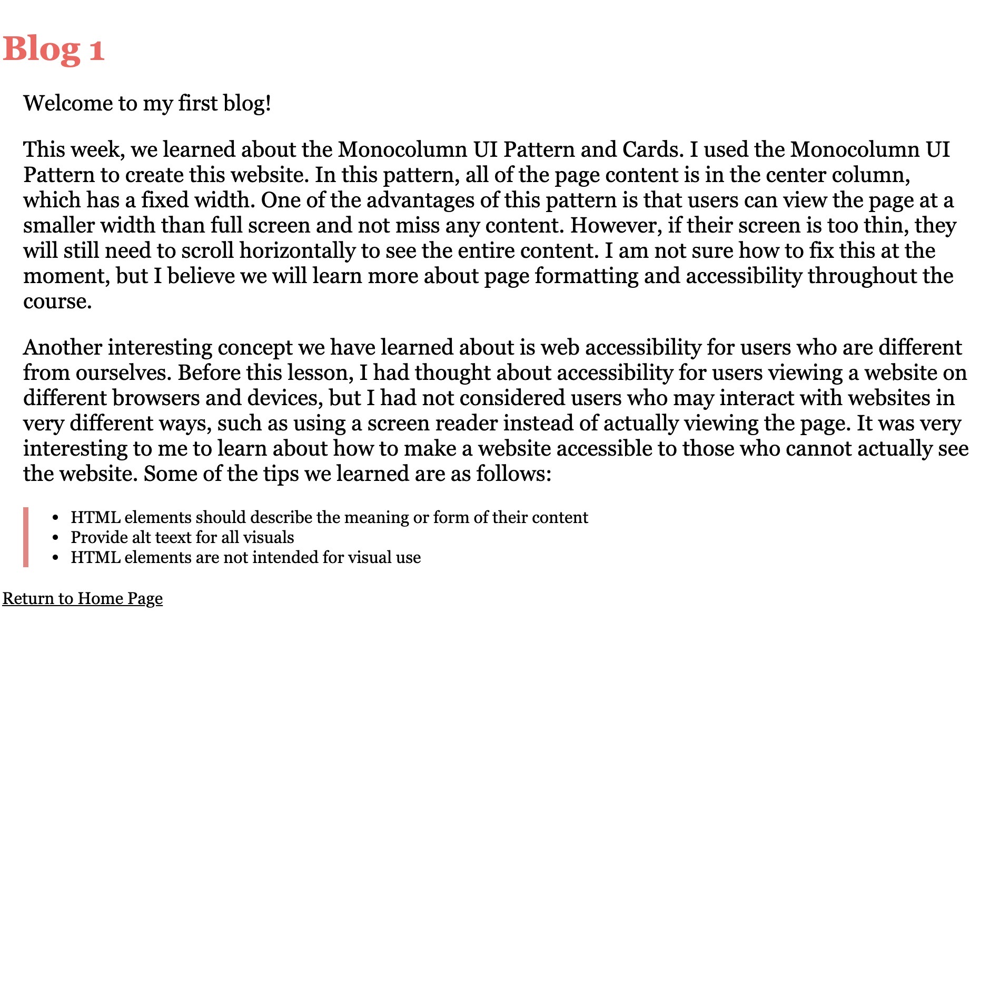
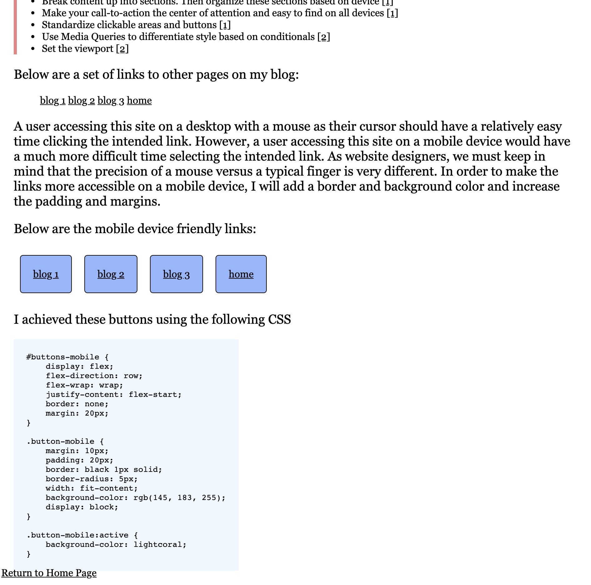

This week, our lectures have mainly focused on learning various aspects of the JavaScript language, its history, and functionalities it provides. JavaScript is often used to make webpages interactive and is mostly used client-side (MDN). In this class, we have used JavaScript to create animations, respond to I/O, and assist with changing styling. We also began exploring how JavaScript differs from other languages and unique functionalities of JavaScript that might be useful to us.
After doing some exploring and research on JavaScript on my own, I came across a few things about JavaScript that we have not touched on in class (yet) that seem important. For one, this article notes the importance of having a "backup" plan when using JavaScript for users without JavaScript. Although most users will have JavaScript enabled, I believe that considering not just most users, but ALL users is ideal. Thus, while we can assume that most visitors of our site will have no issues with our JavaScript usage, we should be mindful that users experience our website in different ways than we do, which includes not having JavaScript. The article suggests that at the very least, a webpage using JavaScript should include the following in their source code:
<noscript>To use this site, please enable JavaScript.</noscript>
The HTML <noscript> element defines a section of HTML to be inserted if a script type on the page is unsupported or if scripting is currently turned off in the browser." (MDN).
Another thing I wanted to note about my blog today is that in the past, my footer has been at the bottom of my content, but not always at the bottom of the webpage. While this did not cause any actual issues, it was definitely not preferable. When I began writing today's blog on a blank page and noticed the footer directly under the header, I knew it was time to get this fixed (no pun intended).
Luckily, we learned about absolute positioning in Lecture 9, so I knew exactly where to start. I added the following CSS to my shared styling sheet and figured I was done.
#root {
position: relative;
}
footer {
position: absolute;
bottom: 10px;
}
While this did fix my footer to the bottom of the page, it created another issue which I'll admit stumped me at first. If you look closely at the bottom of the image below, you'll notice that the footer overlaps the CSS code snippet.
I tried adding padding and a margin, both of which failed to help, and numerous other hacks I could find. Eventually, I found one that worked:
main {
margin-bottom: 30px;
}
If you navigate to Blog 1 and to Blog 4, you'll see the footer is (1) at the bottom of the page and (2) does not overlap any content.